Some Things I've Been Listening to Lately
2020-08-19 Wed 11:43 PM:
The Life of Pi'erre 4 (Deluxe) - Pi'erre Bourne
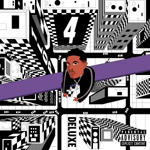
Eroded Corridors of Unbeing - Spectral Voice
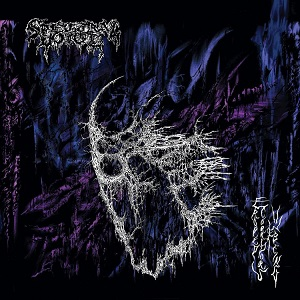
Government Plates - Death Grips

2020-05-13 Wed 12:43 AM:
Hidden History of the Human Race - Blood Incantation
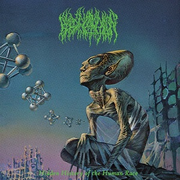
100 - Trudge
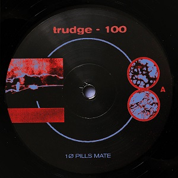
E - Ecco2k
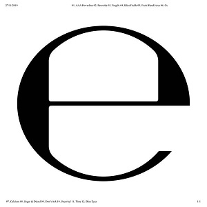
2019-07-27 Sat 03:00 PM:
Overload - Georgia Anne Muldrow
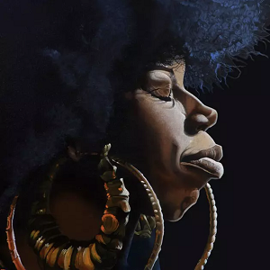
Déjàvu - Matty
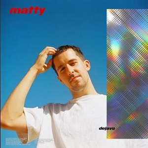
Do Not Pass Me By - Pastor T.L. Barrett
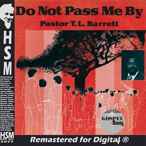
2019-05-27 Mon 04:15 PM:
When I Get Home - Solange
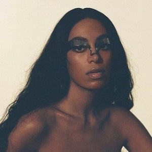
No Geography - The Chemical Brothers
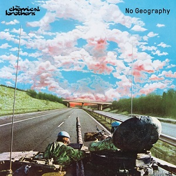
"Come Ina Dis" - Super Cat
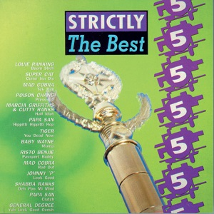
2019-03-18 Mon 04:37 PM:
Whack World - Tierra Whack
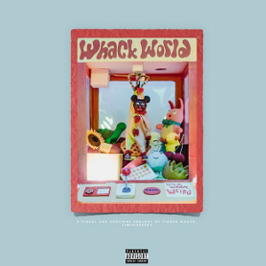
Pawn Hearts - Van der Graaf Generator
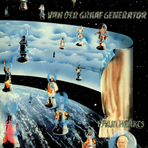
Arthur Verocai - Arthur Verocai
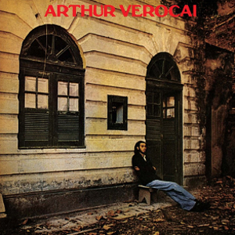
2019-02-25 Mon 10:27 PM:
Slide - George Clanton
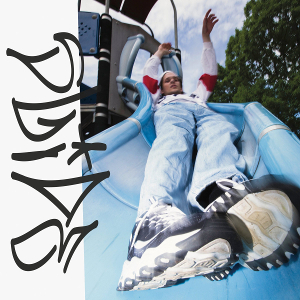
Nostrum Grocers - Nostrum Grocers

"Fingertips" - The Brian Jonestown Massacre
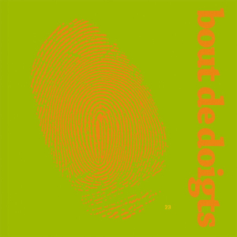
Home